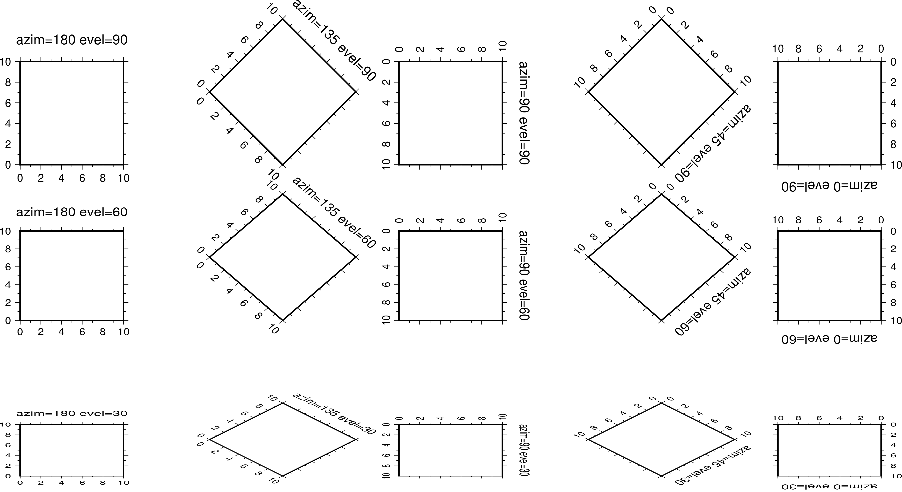
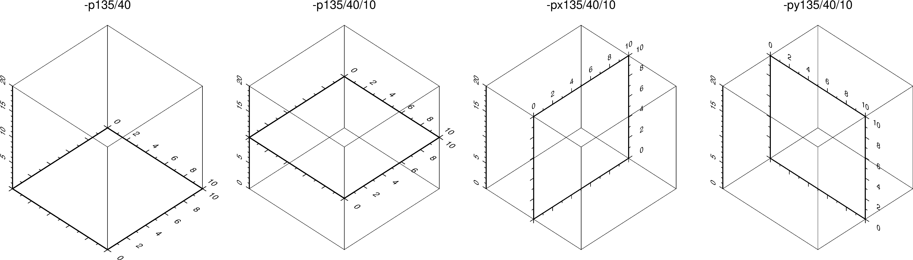

-p 選項¶
-p 選項用於控制2D底圖或3D底圖的透視視角。
對於一個2D底圖（比如二維平面內的矩形）或者一個3D底圖（比如三維空間內的立方體），從不同的方向看時會看到不同的形態。該選項用於控制從怎樣的透視視角去看一張圖。其語法爲：
-p[x|y|z]azim[/elev[/zlevel]][+wlon0/lat0[/z0]][+vx0/y0]
azim 指定視角的方位角，即相對於北方向順時針旋轉的角度，默認值爲180。
elev 指定視角的海拔，即視角相對於紙張平面向上旋轉的角度，其取值範圍爲 0到90（不含0），其中0表示視角與紙張平面平行，90表示視角垂直於紙張平面，默認值爲90。
下圖給出了2D底圖下透視視角取不同值時所看到的底圖。

對於3D底圖而言（使用了 -JZ 選項），默認會在Z軸底部繪製XY平面的邊框。
- 設置 zlevel 則可以指定在 Z=zlevel 平面內繪製邊框
- -px|y|z 則分別用於指定繪製 YZ 平面、XZ平面或XY平面。默認爲 -pz 即繪製XY平面
下圖給出了3D底圖上使用不同的 -p 選項繪製出來的效果圖。繪製底圖使用的命令爲:
gmt basemap -R0/10/0/10/0/20 -JX3c -JZ3c -Baf -Bzaf -BwsENZ1+b -p135/40 -pdf 3D-map

在繪製動畫時，如果不同幀使用的 -p 透視參數不同，則由於投影的問題可能會導致底圖在紙上的位置出現不規則運動。可以有三種方式解決：
- 加上 + 使得數據範圍的中心點固定在紙張的中心
- 加上 +wlon0/lat0/z 將地圖上的某個點固定在紙張的中心
- 加上 +vx0/y0 使得數據範圍的中心點或地圖上的某個點，在投影后的位置始終固定在紙張上的 x0/y0 處
除此之外，若 -p 選項後不接任何參數，則其會繼承前一GMT繪圖命令的 -p 參數。